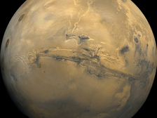
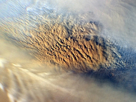

Mars is a rocky body about half the size of Earth. As with the other terrestrial planets - Mercury, Venus, and Earth - volcanoes, impact craters, crustal movement, and atmospheric conditions such as dust storms have altered the surface of Mars.
Mars has two small moons, Phobos and Deimos, that may be captured asteroids. Potato-shaped, they have too little mass for gravity to make them spherical. Phobos, the innermost moon, is heavily cratered, with deep grooves on its surface.
Like Earth, Mars experiences seasons due to the tilt of its rotational axis. Mars' orbit is about 1.5 times farther from the sun than Earth's and is slightly elliptical, so its distance from the sun changes. That affects the length of Martian seasons, which vary in length. The polar ice caps on Mars grow and recede with the seasons. Layered areas near the poles suggest that the planet's climate has changed more than once. Volcanism in the highlands and plains was active more than 3 billion years ago. Some of the giant shield volcanoes are younger, having formed between 1 and 2 billion years ago. Mars has the largest volcano in the solar system, Olympus Mons, as well as a spectacular equatorial canyon system, Valles Marineris.
Mars has no global magnetic field today. However, NASA's Mars Global Surveyor orbiter found that areas of the Martian crust in the southern hemisphere are highly magnetized, indicating traces of a magnetic field from 4 billion years ago that remain.
Scientists believe that Mars experienced huge floods about 3.5 billion years ago. Though we do not know where the ancient flood water came from, how long it lasted, or where it went, recent missions to Mars have uncovered intriguing hints. In 2002, NASA's Mars Odyssey orbiter detected hydrogen-rich polar deposits, indicating large quantities of water ice close to the surface. Further observations found hydrogen in other areas as well. If water ice permeated the entire planet, Mars could have substantial subsurface layers of frozen water. In 2004, Mars Exploration Rover Opportunity found structures and minerals indicating that liquid water once existed at its landing site. The rover's twin, Spirit, also found the signature of ancient water near its landing site, halfway around Mars from Opportunity's location.
The cold temperatures and thin atmosphere on Mars do not allow liquid water to exist at the surface for long. The quantity of water required to carve Mars' great channels and flood plains is not evident today. Unraveling the story of water on Mars is important to unlocking its climate history, which will help us understand the evolution of all the planets. Water is an essential ingredient for life as we know it. Evidence of long-term past or present water on Mars holds clues about whether Mars could ever have been a habitat for life.
In 2008, NASA's Phoenix Mars lander was the first mission to touch water ice in the Martian arctic. Phoenix also observed precipitation (snow falling from clouds), as confirmed by Mars Reconnaissance Orbiter. Soil chemistry experiments led scientists to believe that the Phoenix landing site had a wetter and warmer climate in the recent past (the last few million years). NASA's Mars Science Laboratory mission, with its large rover Curiosity, is examining Martian rocks and soil at Gale Crater, looking for minerals that formed in water, signs of subsurface water, and carbon-based molecules called organics, the chemical building blocks of life. That information will reveal more about the present and past habitability of Mars, as well as whether humans could survive on Mars some day.
How Mars Got its Name
Mars was named by the Romans for their god of war because of its red, bloodlike color. Other civilizations also named this planet from this attribute; for example, the Egyptians named it "Her Desher," meaning "the red one."
Significant Dates
- 1877: Asaph Hall discovers the two moons of Mars, Phobos and Deimos.
- 1965: NASA's Mariner 4 sends back 22 photos of Mars, the world's first close-up photos of a planet beyond Earth.
- 1976: Viking 1 and 2 land on the surface of Mars.
- 1997: Mars Pathfinder lands and dispatches Sojourner, the first wheeled rover to explore the surface of another planet.
- 2002: Mars Odyssey begins its mission to make global observations and find buried water ice on Mars.
- 2004: Twin Mars Exploration Rovers named Spirit and Opportunity find strong evidence that Mars once had long-term liquid water on the surface.
- 2006: Mars Reconnaissance Orbiter begins returning high-resolution images as it studies the history of water on Mars and seasonal changes.
- 2008: Phoenix finds signs of possible habitability, including the occasional presence of liquid water and potentially favorable soil chemistry.
- 2012: NASA's Mars rover Curiosity lands in Gale Crater and finds conditions once suited for ancient microbial life on Mars.